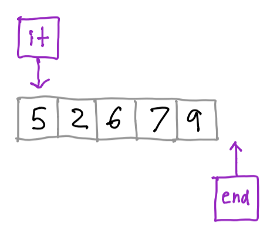
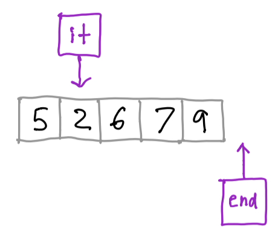
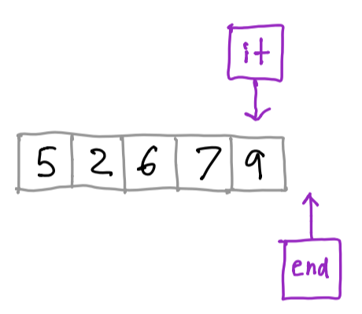
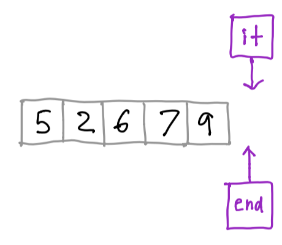
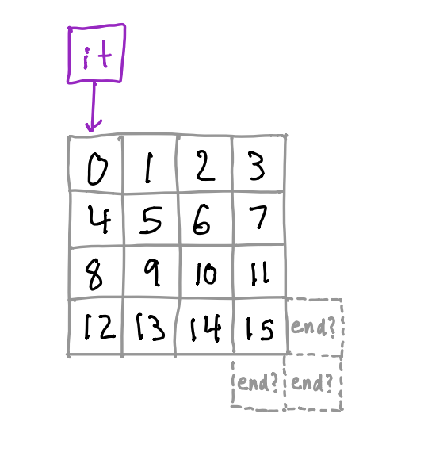
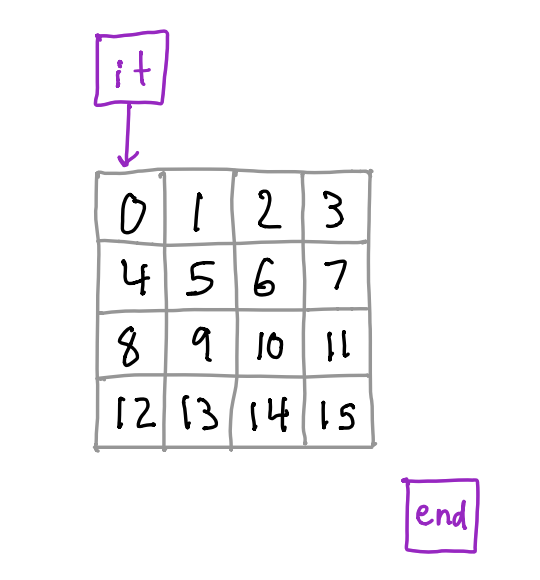
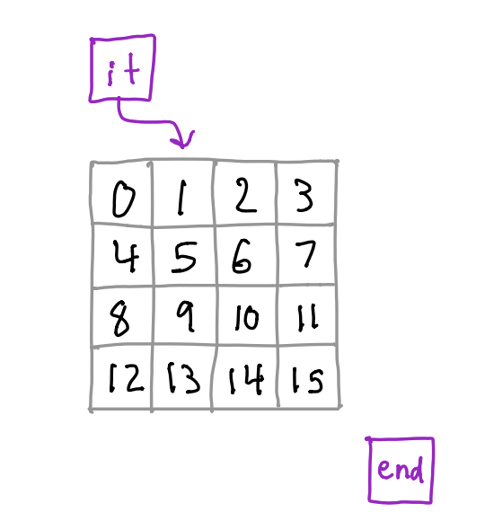
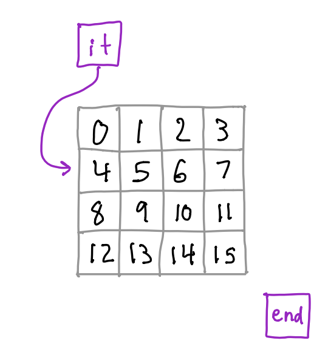
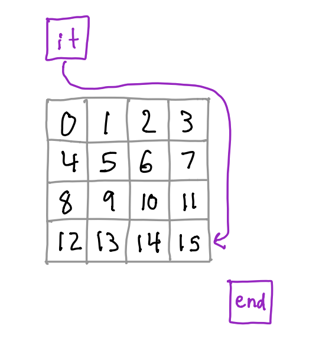
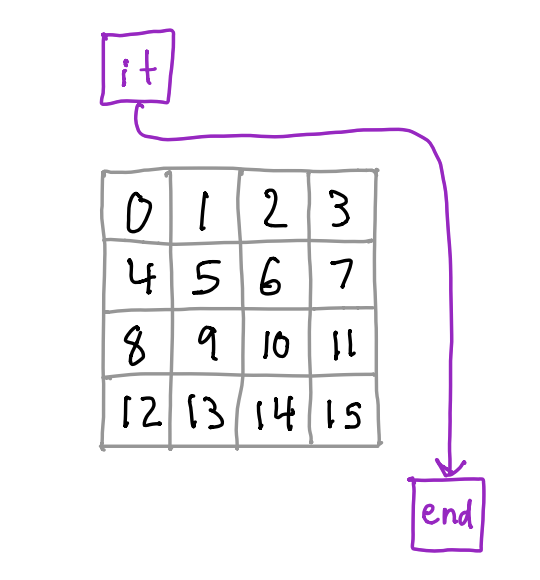

Iterators
by Nathan WaltersAlready know the basics of iterators? Skip straight to a code example, range-based for loops, or using iterators with non-linear data structures.
Motivation for iterators
In C++ (and in general) we often work with collections of elements—in fact, such data structures are the focus of this class! We often want to do something with all the elements in a particular data structure, such as “add five to every integer in a list” or “print every node in a tree”. The kind of code we write to do these iterations often varies a lot depending on the type of data structure we’re using. We might need a single for loop for an array, two nested for loops for the pixels in an image, or some recursive function calls for a tree.
An iterator provides an abstraction over this process of iterating over some elements of a data structure, or container. As long as you can define an order in which to iterate over the elements in a container, you can write an iterator for it! What makes C++ iterators so powerful is that they all have the same interface. You could use the exact same code to iterate over a list, 2D array, tree, or graph.
A conceptual model

Here we have an array of integers with some iterators represented by purple boxes. There are two iterators: one points to the first element in our container, and one points to the “one-past-the-end” position of the container’s data. At this point, we could ask the iterator “What’s your current element?” and it would respond “5”.
Now, let’s advance the iterator to the next element. As long as the iterator isn’t at the “one-past-the-end” position, we can keep advancing it.

The iterator would now tell us its current element is “2”. Let’s advance it a few more positions to the end of the array.

We can still ask the iterator what element it’s at, and it would say “9”. Now let’s advance it one more time.

The iterator that started at the beginning of the array is now at the “one-past-the-end” position. At this point, we can’t advance the iterator any further, and we also can’t check what element the iterator is at; this isn’t defined.
This probably looks like your conceptual model of how array iteration already works, and it’s indeed largely the same. But remember what makes iterators so powerful: they can work on any data structure, not just arrays!
Iterators in C++
Now that you have a high-level of what an iterator is and does, let’s consider the following code.
It creates a std::vector of 5 integers and prints them out.
#include <iostream>
#include <vector>
int main() {
std::vector<int> numbers = {1, 2, 3, 4, 5};
for (int i = 0; i < numbers.size(); i++) {
std::cout << numbers[i] << std::endl;
}
}
This is using the style of for loop that you’re probably familiar with: initialize an index variable to zero and increment it once per iteration until you hit the end of the list.
Let’s see what that code would look like if we used iterators instead:
#include <iostream>
#include <vector>
int main() {
std::vector<int> numbers = {1,2,3,4,5};
for (std::vector<int>::iterator it = numbers.begin(); it != numbers.end(); ++it) {
std::cout << *it << std::endl;
}
}
This might look confusing at first; let’s break it down.
First, notice that we declare a variable it of type std::vector<int>::iterator.
As you should be able to infer from its type, it is the iterator itself! We initialize it
to numbers.begin(). A container that supports iteration has a member function
called begin() that returns an iterator pointing to the first element in the container.
Next, we compare it with numbers.end(). The end() function returns an iterator that
refers to the “one-past-the-end” position of the container. Why does it do this?
Think of a “classic” for loop over some array arr:
for (int i = 0; i < 10; i++) {
// Do some stuff here
}
If arr has 10 elements, we can only access arr[0] through a[9], but we’ll check i < 10
in the for loop. 10 is analagous to the “one-past-the-end” iterator.
In the last statement of the for loop, we call ++it. It might look a bit weird to be calling ++
on a non-primitive type; we usually only call it on something like an integer. But remember that C++,
in all its glorious flexibility, allows us to override operators for certain types. In this case,
iterators override the pre-increment operator. Calling this operator moves the iterator to the “next”
element in the container.
Now, in the body of the for loop, we use *it to access the element in the container that it
currently “points” at. Again, this might look weird—you usually only use the * operator to
dereference pointers. As with ++, iterators overload this operator to mean “give me whatever
element you’re at right now”. In this way, an iterator behaves a little like a pointer, but remember
it isn’t actually a pointer itself!
Range-based for loops
Compared to the style of for loop you’re used to, iterators might appear to be a lot of extra code. Let’s compare our loop again, both without and with iterators.
for (int i = 0; i < numbers.size(); i++) {}
for (std::vector<int>::iterator it = numbers.begin(); it != numbers.end(); ++it) {}
The second one certainly looks much longer and more unweildy than the first. Thankfully, the designers of C++ thought of this and gave us range-based for loops. Let’s use one to rewrite our previous example.
#include <iostream>
#include <vector>
int main() {
std::vector<int> numbers = {1,2,3,4,5};
for (int & num : numbers) {
std::cout << num << std::endl;
}
}
Much nicer, right? In fact, many people might even prefer this to a “classic” for loop with an integer index.
You can read the 6th line as “for each integer num in numbers”. For this reason, this style
of loop is sometimes called a “for-each” loop.
This is what we call syntactic sugar on top of iterators. It takes advantage of
the fact that iterators and the containers that provide them have standardized interfaces.
The compiler sees that numbers has begin() and end() methods that return iterators,
so it can automatically generate the calls to those functions, check if the iterator is
equal to end(), and call ++ after each iteration. In fact, the code that the compiler
will generate for this loop is almost exactly the same as the more explicit iterator code
we saw above. The compiler even automatically “dereferences” the iterator for us: note that
we can use num directly in the body of the loop.
Moving beyond linear structures
So far, we’ve only looked at iterators in the context of a std::vector, which is a linear
structure with a well-defined ordering. But iterators can be used with others kinds of structures
as well, like trees, grids, and graphs. It may be less clear what iteration order to use for
these structures—in some cases, there may be more than one! But we can still implement iterators
for any structure that we can define some type of traversal over.
Let’s consider a relatively simple example of this. We’ve been working with PNGs a lot this semester,
and a pretty common task is iterating over all of the pixels in a PNG object. Let’s think about how
we could use iterators to make this easier.
First, we can define some iteration order over the PNG. If our only goal is simply to iterate over every
pixel, the order in which we visit pixels doesn’t really matter. We could scan row-first, column-first,
or even visit the pixels randomly. To make things simple, let’s scan row-first. That is, we visit the
coordinates (0, 0), (1, 0), (2, 0), …, (0, 1), (1, 1), …, and so on.

Notice something interesting—unlike with an array, we don’t have a very obvious way to define what the “one-past-the-end” position is. And that’s OK! That position doesn’t have to correspond with an actual element or position in the container. Rather, the semantics just have to be that once we advance an iterator past the last element in the container, the iterator is then “equal” to the end iterator. So, we can define our end iterator to be some abstract position that’s not on the image grid itself.

We’re starting with the iterator pointing at the first position. Let’s advance it one position.

If we advance a few more time, we’ll end up on the first column of the second row of the image.

If we keep going, we’ll end up at the last valid coordinate on the image.

If we try to advance one more time, our iterator will end up at our “one-past-the-end” iterator.

At this point, we can’t advance any more, so we’re done!
We can imagine extending the PNG class to support iterators. To do so,
we’d need to add begin() and end() methods. We’d also need to define a custom iterator with
the following properties:
operator++would advance to the coordinates of the next pixel or to the special “one-past-the-end” stateoperator*would return a reference to theHSLAPixelat the current positionoperator!=would check if two iterators are at the same position and returnfalsewhen the iterator reaches theend()iterator
We won’t go into the details of how such an implementation of would work here. However, we can see how it could be used to improve our code.
For example, consider this function that transforms a PNG to grayscale:
void grayscale(cs225::PNG & png) {
for (unsigned x = 0; x < png.width(); x++) {
for (unsigned y = 0; y < png.height(); y++) {
cs225::HSLAPixel & pixel = png.getPixel(x, y);
pixel.s = 0;
}
}
}
With our newly-upgraded PNG class, we could rewrite this to use an iterator:
void grayscale(PNG & png) {
for (PNG::iterator it = png.begin(); it != png.end(); ++it)
HSLAPixel & pixel = *it;
pixel.s = 0;
}
}
Or, better yet, we could use a range-based for loop:
void grayscale(PNG & png) {
for (HSLAPixel & pixel : png) {
pixel.s = 0;
}
}